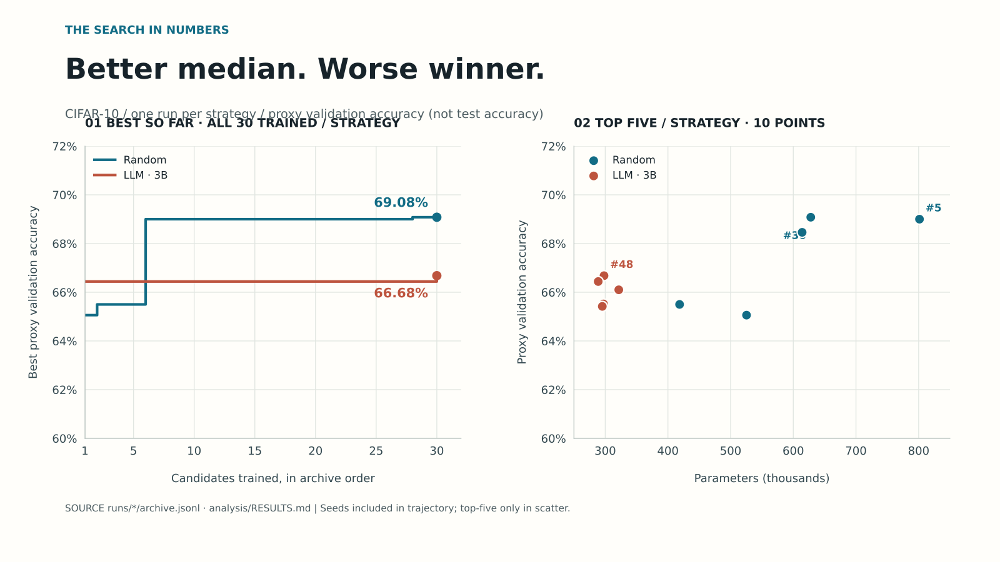

Code, not prompts as predictions.
Qwen2.5-Coder 3B mutates or crosses over selected PyTorch CNNs. Random search samples a hand-designed architecture space.
A local Qwen2.5-Coder 3B proposed PyTorch architectures; random sampling was the baseline. After equal numbers of trained candidates, the best random finalist scored 92.72% on the test set versus 89.34% for the best LLM finalist.
One run per strategy · CIFAR-10 · 20-epoch finalist training · not evidence that random search always wins.
Left: best proxy validation accuracy as each candidate finished training (all 30 per strategy). Right: the ten report-listed top-five candidates, plotted against parameter count. Neither plot shows test accuracy; finalist test scores appear below.

runs/llm_qwen3b/archive.jsonl, runs/random/archive.jsonl and analysis/RESULTS.md. Hand-designed LLM seeds are included in the trajectory.Download 2400 × 1350 PNG ↗+3.38 percentage points for the random finalist. The test set was used only for finalists, not to guide the search. These are different-sized models; the result does not isolate search strategy from model size.
All ten top-five candidates named in the original report. Sort the table to compare proxy validation accuracy and size; only four finalists have reported test results. Proxy and test accuracy are different evaluations.
| Origin / idea |
|---|
The plot shows all 60 trained candidates on the left, but the table and right-hand plot show only the ten published top-five entries. Source: analysis/RESULTS.md ↗. Original lower-resolution report plot ↗
The search changes only model architecture, not the training recipe. The LLM runs on CPU while the laptop GPU trains candidates.
Qwen2.5-Coder 3B mutates or crosses over selected PyTorch CNNs. Random search samples a hand-designed architecture space.
Static checks and a CPU dry run enforce shape and compute limits (≤1M parameters and ≤600 MFLOPs). The AST checks are not a security boundary.
A 5-epoch proxy trains on 10k images and scores on held-out validation data. The finalists retrain for 20 epochs on 45k images before the test evaluation.
The LLM's median non-seed proxy candidate reached 59.78% against 56.92% for random; the best proxy candidates reached 66.68% and 69.08%, respectively. Each strategy trained 30 candidates (46 LLM proposals, 33 random proposals; seeds excluded from proposal counts).
The LLM repeatedly proposed depthwise-separable convolutions close to its seeds; its run logged 9 duplicates and 8 errors. Random explored larger inverted-residual networks. A noisy proxy, unequal model sizes and no repeated seeds limit any broader conclusion. Larger LLMs and ablations remain future work, not reported experiments.
See the training recipe, archived code and full report in the public repository. This page is a static account, not a live training demo.
Browse the source ↗Setup and limitations ↗